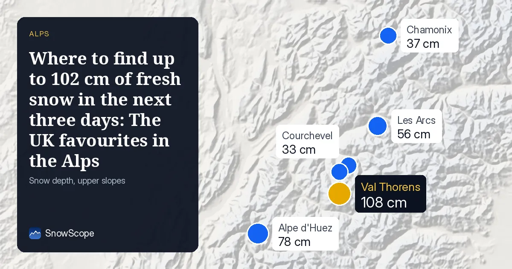
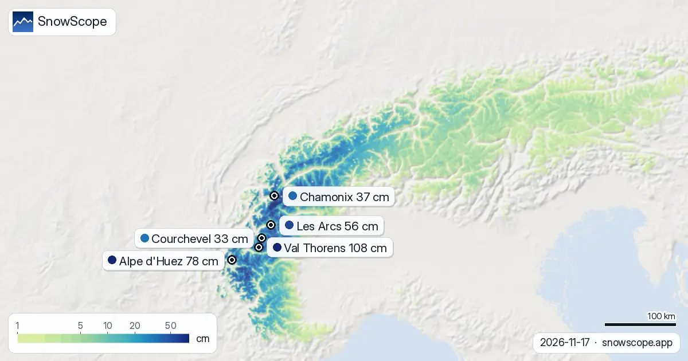
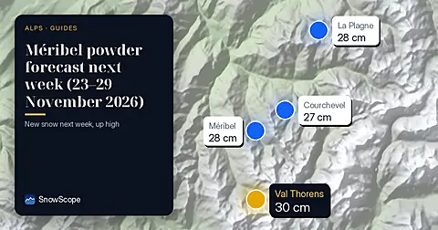

Where to find up to 102 cm of fresh snow in the next three days: The UK favourites in the Alps
Val Thorens sits at the top of the UK's preferred Alpine resorts with 108 cm on its upper slopes. The next three days will bring even more snow across the region, with up to 102 cm forecast to fall at the highest points by 20 November.
See the live snow forecast for Val Thorens in the SnowScope appSnow depth, powder alerts and the 3D map, free.
What's coming in the next 72 hours
Between now and 20 November, Val Thorens is set to gain 102 cm, Les Arcs 92 cm, and Courchevel 89 cm. This is serious accumulation for mid-November, enough to transform the terrain above 2,900 m across all these resorts.
Lower resorts will also benefit. Méribel and Chamonix are both forecast to reach 85 cm by the end of the period, while Avoriaz will see 75 cm at its highest elevations.
| Resort | Snow depth | New snow, 72 h | Coming, next days | Top |
|---|---|---|---|---|
| Val Thorens | 108 cm | 74 cm | 102 cm | 3,221 m |
| Les Arcs | 56 cm | 66 cm | 92 cm | 3,205 m |
| Courchevel | 33 cm | 55 cm | 89 cm | 2,695 m |
| Alpe d'Huez | 78 cm | 72 cm | 85 cm | 3,306 m |
| Chamonix | 37 cm | 52 cm | 85 cm | 2,486 m |
| Méribel | 33 cm | 55 cm | 85 cm | 2,920 m |

The snow that has already fallen
Over the past three days, Val Thorens received 74 cm, Alpe d'Huez 72 cm, and Les Arcs 66 cm. This recent run has reset conditions and filled the early-season gaps between rocky patches.
Even the lower resorts have seen meaningful accumulation: Courchevel, Méribel and La Plagne each picked up 55 to 56 cm, while Chamonix gathered 52 cm in the same period.
Upper slopes ranked by current depth
Alpe d'Huez now leads the depth count at 3,306 m with 78 cm. Val Thorens sits just behind at 3,221 m with 108 cm—the difference comes from elevation and recent storms in different valleys.
Les Arcs (56 cm at 3,205 m), Chamonix (37 cm at 2,486 m) and Courchevel (33 cm at 2,695 m) fill out the next tier. Across all 12 resorts tracked, the median depth sits at 33 cm, which shows how early the season still is.
Which height matters most right now
The best skiing through this forecast window stays above 2,900 m. At Val Thorens, Les Arcs and Alpe d'Huez, the top lifts all exceed 3,200 m, and the new snow will lie thick enough to cover rocks.
Resorts with lower peaks—Avoriaz tops out at 2,250 m—will have thinner coverage. Plan your days on the higher terrain if you want the softest snow and the best chance of skiing off-piste safely.
Planning a short trip from the UK
Val Thorens offers the strongest case for a quick break: it has the deepest base now (108 cm) and will gain the most by Friday (102 cm more). Two days on skis here will reward you with consistent, deep conditions.
Before you book the transfer, check how long it takes from Geneva, Lyon or Salzburg. A short drive means you gain time on the slopes after landing, while a long one eats into your first afternoon.
Off-piste and steep terrain
Seventy centimetres of fresh snow on a thin base still poses risks. Rocks can lurk just beneath the surface, and cornices hang over gullies. Read the official avalanche bulletin for each valley before leaving the pistes.
Stick to slopes you know well and ski with others. The cold nights mean the new snow sits firm on what lies below, which makes steep terrain ski well again—but only once you've checked conditions with local guides or the avalanche service.
Tips for skiers
- Ring ahead to confirm which lifts open each morning; early November can still see rolling closures in high winds.
- Sleep in Geneva or Lyon on the night you arrive and drive up the next morning. The extra rest pays for itself in energy on day one.
- Bring layers: forecast snow often means cloud, colder air and poor visibility. Base layers, a mid-layer fleece and a windproof shell are non-negotiable.
- Aim for first tracks at first light. Cold nights freeze the surface, and the first few hours give the best piste texture before it softens.
- Before any off-piste descent, check the official avalanche bulletin and hire a local guide if you are unfamiliar with the terrain.
About these numbers
Resort snow depths are the deepest snow on the resort's upper slopes on the date shown; they are estimates for an area, not a measurement at one point. Forecasts can change. Always read the official avalanche bulletin before going off-piste.
Cite this report
For research, teaching or the press: the numbers and charts are free to reuse under CC BY 4.0 with this citation.
SnowScope (2026), Where to find up to 102 cm of fresh snow in the next three days: The UK favourites in the Alps, https://snowscope.app/blog/en/2026/11/fresh-snow-next-days-alps-uk-17-november-2026.html, accessed 2026-11-17
SnowScope (Atlas Labs). (2026, November 17). Where to find up to 102 cm of fresh snow in the next three days: The UK favourites in the Alps. SnowScope snow reports. https://snowscope.app/blog/en/2026/11/fresh-snow-next-days-alps-uk-17-november-2026.html
BibTeX
@misc{snowscope2026freshsnownextdaysalpsuk1,
author = {{SnowScope (Atlas Labs)}},
title = {Where to find up to 102 cm of fresh snow in the next three days: The UK favourites in the Alps},
year = {2026},
month = nov,
howpublished = {\url{https://snowscope.app/blog/en/2026/11/fresh-snow-next-days-alps-uk-17-november-2026.html}},
note = {Published 2026-11-17 12:53 UTC; accessed 2026-11-17}
}· CC BY 4.0 · Methods, data and tools →
Val Thorens: snow and temperature by height, this winter vs last (tools) →
Follow Val Thorens
Free: a message when fresh snow is coming, and the forecast every morning.
More snow reports

Méribel's upper slopes collect 28 cm next week (23–29 Nov); most falls Wed–Thu and Sun. Data from 16 Nov.

Courchevel gets 27 cm at the top 23–29 November, with Wednesday 25 as the heaviest day. Forecast from 16 November.

Avoriaz forecast for 23–29 November: 29 cm at the top (range 9–48 cm), 27 cm mid-mountain, 17 cm at base. Best days: 24, 25, 26, 29 November.